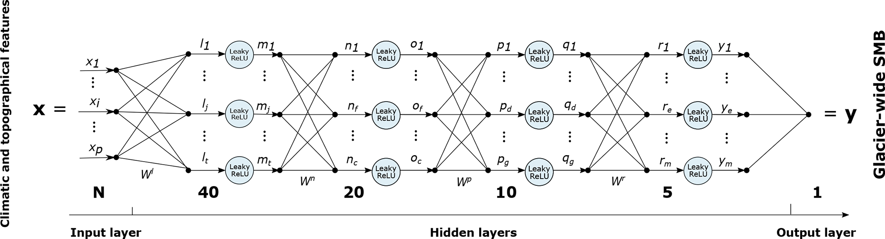
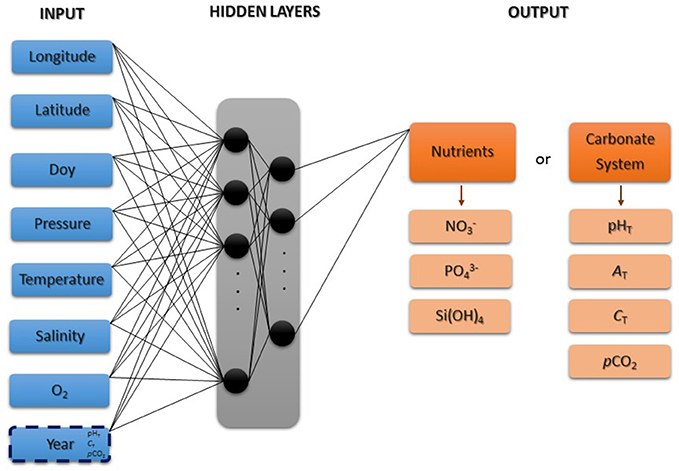

From a neuron to a network:
templates, logistic regression, layers
Session 21 · Mon Nov 16 and Wed Nov 18 · Book section 4.0
Chapter 4: four canonical networks

The data choose the network, and each network must first beat a simpler method. Every row is built from one neuron: today.
From the rule to the loss: the error becomes smooth

Replace the step by the sigmoid and the 1958 update becomes the gradient update on the log-loss of lecture 16. Every network in Chapter 4 is trained with this update.
Part 3. A network: neurons that feed neurons

Each hidden neuron is the same neuron, with its own weights. The output neurons take the hidden outputs as their inputs.
A simple example: temperature against depth in the ocean

🖥️ Model & simulation 🌊 Ocean 🌊 Oceanography
One neuron predicts a straight line: 2.4 °C per 100 m, error 1.0 °C. It cannot bend at the two thermoclines. Synthetic profile, 60 samples.

In the literature: glacier mass balance, French Alps

🖥️ Model & simulation 🧊 Cryosphere 🧊 Glaciology

Bolibar et al. (2020), The Cryosphere 14, 565–584, Figs. 6 and 3. doi:10.5194/tc-14-565-2020. CC BY 4.0.
On glaciers left out of training, the error falls from 0.74 m of water per year for the linear model (b) to 0.51 for the network (c).
In the literature: snow and ocean nutrients

📍 In-situ sensor 💧 Land water 💧 Hydrology & land-surface modeling
Ntokas et al. (2021), Hydrol. Earth Syst. Sci. 25, 3017–3040, Fig. 15. doi:10.5194/hess-25-3017-2021. CC BY 4.0.

📍 In-situ sensor 🌊 Ocean 🌊 Oceanography
Sauzède et al. (2017), Front. Mar. Sci. 4, 128, Fig. 2. doi:10.3389/fmars.2017.00128. CC BY.
Snow water from snow depth: one hidden layer, R² 0.97 against 0.88 for regression formulas. Ocean nitrate: two hidden layers, error 1.04 µmol/kg.
Chapter 4: the neuron inside every network
Each row is today’s neuron, repeated and connected in a different way, and trained by the same gradient descent.